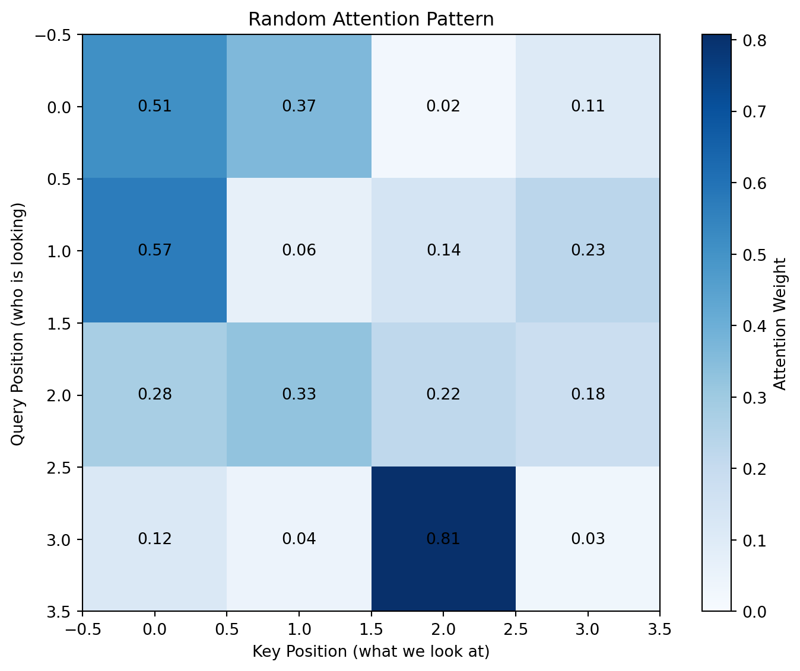
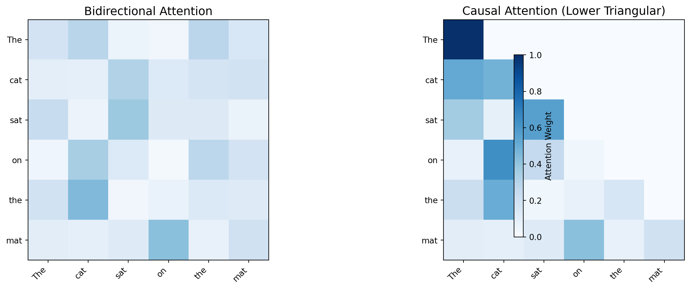
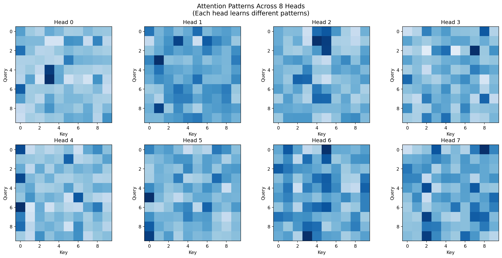
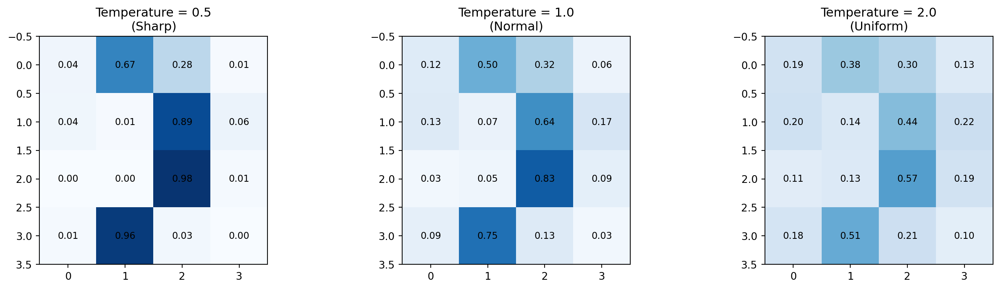
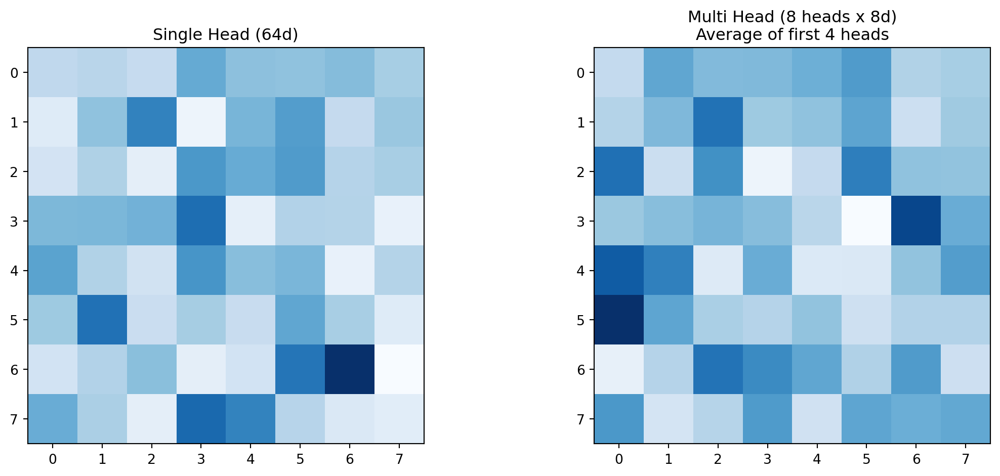
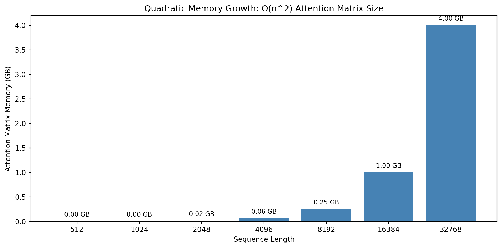

flowchart LR
subgraph tokens["Tokens"]
t1["The"]
t2["cat"]
t3["sat"]
t4["on"]
t5["the"]
t6["mat"]
end
subgraph attention["sat attends to..."]
t3 -->|"0.6"| t2
t3 -->|"0.2"| t3
t3 -->|"0.1"| t1
t3 -->|"0.1"| t6
end
Module 05: Attention
Introduction
The mechanism that made transformers revolutionary. Attention allows each token to “look at” every other token and gather relevant information.
Instead of processing tokens in isolation, attention lets each token ask: “What other tokens in this sequence are relevant to me?”
Why attention matters for LLMs:
- Long-range dependencies: Token at position 100 can directly attend to token at position 1 (RNNs struggle with this due to vanishing gradients)
- Parallelization: Unlike RNNs, all positions can be computed simultaneously during training
- Interpretability: Attention weights show what the model is “looking at”
- Dynamic context: Each token’s representation is context-dependent, not fixed
The key innovation: self-attention - tokens attend to other tokens in the same sequence. This is distinct from cross-attention (used in encoder-decoder models) where queries come from one sequence and keys/values from another.
Intuition: Query, Key, Value
Think of attention as a “soft lookup” - like a database query, but differentiable:
Query: "What information do I need?" (the question)
Keys: "What information do I have?" (index/labels for content)
Values: "Here's my actual information" (the content itself)
Attention = softmax(Query . Keys) x ValuesAnalogy: Imagine a library where:
- Your query is “books about cats”
- Each book has a key (its topic/keywords)
- Each book has a value (its actual content)
- You get a weighted average of book contents based on how well they match your query
For the sentence “The cat sat on the mat”:
- “sat” might attend strongly to “cat” (who sat?) and weakly to “mat” (where?)
- “mat” might attend strongly to “the” and “on” (which mat? on what?)
Each row of attention weights sums to 1 (softmax normalization).
The Math: Scaled Dot-Product Attention
The attention formula:
Attention(Q, K, V) = softmax(QK^T / sqrt(d_k)) x VWhere:
- Q (Query): What am I looking for? Shape: (seq, d_k)
- K (Key): What do I have to offer? Shape: (seq, d_k)
- V (Value): What information do I carry? Shape: (seq, d_v)
- d_k: Dimension of keys (for scaling)
Step by Step
flowchart TB
subgraph step1["Step 1: Compute Similarity"]
Q["Q (seq x d_k)"]
K["K (seq x d_k)"]
QK["QK^T (seq x seq)"]
Q --> QK
K -->|"transpose"| QK
end
subgraph step2["Step 2: Scale"]
QK --> scale["/ sqrt(d_k)"]
scale -->|"prevents saturation"| scores["Scaled Scores"]
end
subgraph step3["Step 3: Softmax"]
scores --> softmax["softmax(dim=-1)"]
softmax --> weights["Attention Weights<br/>(each row sums to 1)"]
end
subgraph step4["Step 4: Apply to Values"]
weights --> matmul["@ V"]
V["V (seq x d_v)"] --> matmul
matmul --> output["Output (seq x d_v)"]
end
Why Scale by sqrt(d_k)?
Without scaling, large d_k leads to large dot products, which pushes softmax into regions with tiny gradients (saturation). Here’s the mathematical intuition:
The Problem: When Q and K have elements drawn from a distribution with mean 0 and variance 1, their dot product has variance proportional to d_k. For d_k = 64, dot products can easily reach values like 8 or -10.
Why This Matters: Softmax of large values produces near-one-hot distributions:
softmax([10, 0, 0])=[0.9999, 0.00005, 0.00005]
This causes:
- Vanishing gradients: The gradient of softmax approaches 0 at extremes
- Loss of information: We want soft attention, not hard selection
The Solution: Dividing by sqrt(d_k) normalizes variance back to ~1.
import torch
import torch.nn.functional as F
import math
# Show the effect of scaling
d_k = 64
q = torch.randn(1, d_k)
k = torch.randn(1, d_k)
dot_product = (q @ k.T).item()
scaled = dot_product / math.sqrt(d_k)
print(f"d_k = {d_k}")
print(f"Raw dot product: {dot_product:.2f}")
print(f"Scaled by sqrt({d_k}) = {math.sqrt(d_k):.1f}: {scaled:.2f}")
print(f"\nScaling keeps values in a reasonable range for softmax")
# Demonstrate the gradient problem
scores_large = torch.tensor([[10.0, 1.0, 1.0]], requires_grad=True)
scores_normal = torch.tensor([[1.0, 0.5, 0.5]], requires_grad=True)
weights_large = F.softmax(scores_large, dim=-1)
weights_normal = F.softmax(scores_normal, dim=-1)
print(f"\nLarge scores [10, 1, 1] -> softmax: {weights_large.detach().numpy().round(4)}")
print(f"Normal scores [1, 0.5, 0.5] -> softmax: {weights_normal.detach().numpy().round(3)}")d_k = 64
Raw dot product: -5.82
Scaled by sqrt(64) = 8.0: -0.73
Scaling keeps values in a reasonable range for softmax
Large scores [10, 1, 1] -> softmax: [[9.998e-01 1.000e-04 1.000e-04]]
Normal scores [1, 0.5, 0.5] -> softmax: [[0.452 0.274 0.274]]Code: Scaled Dot-Product Attention
Let’s implement attention step by step. This follows the exact algorithm from the attention.py module:
def scaled_dot_product_attention(query, key, value, mask=None):
"""
Compute scaled dot-product attention.
Attention(Q, K, V) = softmax(QK^T / sqrt(d_k)) x V
Args:
query: (batch, seq, d_k) or (..., seq, d_k)
key: (batch, seq, d_k)
value: (batch, seq, d_v) # d_v can differ from d_k
mask: Optional mask where 0 = masked, 1 = attend
Returns:
output: (batch, seq, d_v)
attention_weights: (batch, seq, seq)
Note: The mask convention (0 = masked) matches the module implementation.
Masked positions get -inf before softmax, becoming 0 after.
"""
d_k = query.size(-1)
# Step 1: Compute similarity scores
# QK^T: (..., seq, d_k) @ (..., d_k, seq) -> (..., seq, seq)
scores = torch.matmul(query, key.transpose(-2, -1))
# Step 2: Scale by sqrt(d_k)
scores = scores / math.sqrt(d_k)
# Step 3: Apply mask (if provided)
# Masked positions get -inf, which becomes 0 after softmax
if mask is not None:
scores = scores.masked_fill(mask == 0, float('-inf'))
# Step 4: Softmax (each row sums to 1)
attention_weights = F.softmax(scores, dim=-1)
# Step 5: Weighted sum of values
output = torch.matmul(attention_weights, value)
return output, attention_weights
# Test it
batch, seq, d_k = 1, 4, 8
Q = torch.randn(batch, seq, d_k)
K = torch.randn(batch, seq, d_k)
V = torch.randn(batch, seq, d_k)
output, weights = scaled_dot_product_attention(Q, K, V)
print(f"Query shape: {Q.shape}")
print(f"Key shape: {K.shape}")
print(f"Value shape: {V.shape}")
print(f"Output shape: {output.shape}")
print(f"Attention weights shape: {weights.shape}")
print(f"\nAttention weights (each row sums to 1):")
print(weights[0].round(decimals=2).numpy())
print(f"\nRow sums: {weights[0].sum(dim=-1).numpy()}")Query shape: torch.Size([1, 4, 8])
Key shape: torch.Size([1, 4, 8])
Value shape: torch.Size([1, 4, 8])
Output shape: torch.Size([1, 4, 8])
Attention weights shape: torch.Size([1, 4, 4])
Attention weights (each row sums to 1):
[[0.51 0.37 0.02 0.11]
[0.57 0.06 0.14 0.23]
[0.28 0.33 0.22 0.18]
[0.12 0.04 0.81 0.03]]
Row sums: [1.0000001 1. 1. 1. ]Visualizing Attention Patterns
import matplotlib.pyplot as plt
def visualize_attention(weights, tokens=None, title="Attention Pattern"):
"""Visualize attention weights as a heatmap."""
if weights.dim() == 3:
weights = weights[0] # Remove batch dim
weights = weights.detach().numpy()
seq_len = weights.shape[0]
plt.figure(figsize=(8, 6))
plt.imshow(weights, cmap='Blues', vmin=0, vmax=weights.max())
plt.colorbar(label='Attention Weight')
if tokens:
plt.xticks(range(seq_len), tokens, rotation=45, ha='right')
plt.yticks(range(seq_len), tokens)
else:
plt.xlabel('Key Position (what we look at)')
plt.ylabel('Query Position (who is looking)')
# Add values in cells
for i in range(seq_len):
for j in range(seq_len):
plt.text(j, i, f'{weights[i, j]:.2f}', ha='center', va='center', fontsize=10)
plt.title(title)
plt.tight_layout()
plt.show()
# Visualize the attention pattern from above
visualize_attention(weights, title="Random Attention Pattern")
Causal Masking for Language Models
In autoregressive models (like GPT), tokens can only attend to previous tokens, not future ones. We enforce this with a causal mask:
flowchart LR
subgraph bidirectional["Bidirectional (BERT)"]
b1["Each token sees ALL tokens"]
end
subgraph causal["Causal (GPT)"]
c1["Each token sees PAST only"]
end
def create_causal_mask(seq_len):
"""Create a lower triangular causal mask."""
return torch.tril(torch.ones(seq_len, seq_len))
# Show the mask
seq_len = 6
mask = create_causal_mask(seq_len)
print("Causal Mask (1 = can attend, 0 = masked):")
print()
tokens = ["The", "cat", "sat", "on", "the", "mat"]
for i in range(seq_len):
row = ['#' if mask[i, j] == 1 else '.' for j in range(seq_len)]
print(f" {tokens[i]:4s}: {''.join(row)}")
print(f"\nPosition 0 can only see position 0")
print(f"Position 5 can see all previous positions")Causal Mask (1 = can attend, 0 = masked):
The : #.....
cat : ##....
sat : ###...
on : ####..
the : #####.
mat : ######
Position 0 can only see position 0
Position 5 can see all previous positions# Apply causal mask
Q = torch.randn(1, 6, 8)
K = torch.randn(1, 6, 8)
V = torch.randn(1, 6, 8)
# Without mask (bidirectional)
output_bi, weights_bi = scaled_dot_product_attention(Q, K, V)
# With causal mask
output_causal, weights_causal = scaled_dot_product_attention(Q, K, V, mask=mask)
# Compare
fig, axes = plt.subplots(1, 2, figsize=(14, 5))
ax = axes[0]
w = weights_bi[0].detach().numpy()
im = ax.imshow(w, cmap='Blues', vmin=0, vmax=1)
ax.set_title('Bidirectional Attention', fontsize=14)
ax.set_xticks(range(6))
ax.set_yticks(range(6))
ax.set_xticklabels(tokens, rotation=45, ha='right')
ax.set_yticklabels(tokens)
ax = axes[1]
w = weights_causal[0].detach().numpy()
im = ax.imshow(w, cmap='Blues', vmin=0, vmax=1)
ax.set_title('Causal Attention (Lower Triangular)', fontsize=14)
ax.set_xticks(range(6))
ax.set_yticks(range(6))
ax.set_xticklabels(tokens, rotation=45, ha='right')
ax.set_yticklabels(tokens)
plt.colorbar(im, ax=axes, shrink=0.8, label='Attention Weight')
plt.tight_layout()
plt.show()
print("Notice: In causal attention, the upper triangle is 0 (can't attend to future)")/var/folders/hl/bw75m5hd5xvfyx8j9qd71vjw0000gn/T/ipykernel_20375/305894186.py:34: UserWarning: This figure includes Axes that are not compatible with tight_layout, so results might be incorrect.
plt.tight_layout()
Notice: In causal attention, the upper triangle is 0 (can't attend to future)Multi-Head Attention
Instead of one attention head, we use multiple “heads” that can learn different patterns:
MultiHead(Q, K, V) = Concat(head_1, ..., head_h) x W_O
where head_i = Attention(Q x W_Q_i, K x W_K_i, V x W_V_i)Why Multiple Heads?
A single attention head computes one weighted average, which limits what relationships it can capture. Multiple heads provide:
- Diverse patterns: Different heads can focus on different relationships (syntax, semantics, position, coreference)
- Subspace attention: Each head operates in a lower-dimensional subspace (
head_dim = embed_dim / num_heads), allowing specialized representations - Computational efficiency: Despite having multiple heads, the total computation is similar to single-head attention with full dimensionality (same number of parameters)
Typical configurations:
- GPT-2: 12 heads, 768 embed_dim, 64 head_dim
- GPT-3: 96 heads, 12288 embed_dim, 128 head_dim
- Llama 2 (7B): 32 heads, 4096 embed_dim, 128 head_dim
flowchart TB
subgraph input["Input"]
x["x (batch, seq, embed_dim)"]
end
subgraph projections["Linear Projections"]
x --> wq["W_Q"]
x --> wk["W_K"]
x --> wv["W_V"]
wq --> Q["Q"]
wk --> K["K"]
wv --> V["V"]
end
subgraph split["Split into Heads"]
Q --> reshape["Reshape to (batch, heads, seq, head_dim)"]
K --> reshape
V --> reshape
end
subgraph heads["Parallel Attention Heads"]
reshape --> h0["Head 0"]
reshape --> h1["Head 1"]
reshape --> hdots["..."]
reshape --> hn["Head n"]
end
subgraph combine["Combine"]
h0 --> concat["Concatenate"]
h1 --> concat
hdots --> concat
hn --> concat
concat --> wo["W_O (output projection)"]
wo --> out["Output (batch, seq, embed_dim)"]
end
What Different Heads Learn
In trained models, different heads specialize:
- Head 0: “Who did what?” - attends to subject-verb pairs
- Head 1: “What comes before?” - attends to previous token
- Head 2: “What’s similar?” - attends to semantically similar words
- Head 3: “Syntax patterns” - attends to grammatical structure
import torch.nn as nn
class MultiHeadAttention(nn.Module):
"""Multi-head attention with separate Q, K, V projections."""
def __init__(self, embed_dim, num_heads, dropout=0.0):
super().__init__()
assert embed_dim % num_heads == 0
self.embed_dim = embed_dim
self.num_heads = num_heads
self.head_dim = embed_dim // num_heads
# Projections for Q, K, V
self.q_proj = nn.Linear(embed_dim, embed_dim)
self.k_proj = nn.Linear(embed_dim, embed_dim)
self.v_proj = nn.Linear(embed_dim, embed_dim)
# Output projection
self.out_proj = nn.Linear(embed_dim, embed_dim)
self.dropout = nn.Dropout(dropout)
def forward(self, x, mask=None, return_attention=False):
batch_size, seq_len, _ = x.shape
# Project Q, K, V
q = self.q_proj(x) # (batch, seq, embed)
k = self.k_proj(x)
v = self.v_proj(x)
# Reshape for multi-head: (batch, seq, embed) -> (batch, heads, seq, head_dim)
q = q.view(batch_size, seq_len, self.num_heads, self.head_dim).transpose(1, 2)
k = k.view(batch_size, seq_len, self.num_heads, self.head_dim).transpose(1, 2)
v = v.view(batch_size, seq_len, self.num_heads, self.head_dim).transpose(1, 2)
# Compute attention
d_k = q.size(-1)
scores = torch.matmul(q, k.transpose(-2, -1)) / math.sqrt(d_k)
if mask is not None:
scores = scores.masked_fill(mask == 0, float('-inf'))
attention_weights = F.softmax(scores, dim=-1)
attention_weights = self.dropout(attention_weights)
# Apply attention to values
attn_output = torch.matmul(attention_weights, v)
# Reshape back: (batch, heads, seq, head_dim) -> (batch, seq, embed)
attn_output = attn_output.transpose(1, 2).contiguous()
attn_output = attn_output.view(batch_size, seq_len, self.embed_dim)
# Final projection
output = self.out_proj(attn_output)
if return_attention:
return output, attention_weights
return output
# Test multi-head attention
embed_dim = 64
num_heads = 8
mha = MultiHeadAttention(embed_dim=embed_dim, num_heads=num_heads)
x = torch.randn(2, 10, embed_dim)
output, weights = mha(x, return_attention=True)
print(f"Multi-Head Attention Configuration:")
print(f" Embedding dimension: {embed_dim}")
print(f" Number of heads: {num_heads}")
print(f" Dimension per head: {embed_dim // num_heads}")
print(f"\nInput shape: {x.shape}")
print(f"Output shape: {output.shape}")
print(f"Attention weights shape: {weights.shape}")
print(f" (batch, heads, query_pos, key_pos)")
print(f"\nTotal parameters: {sum(p.numel() for p in mha.parameters()):,}")Multi-Head Attention Configuration:
Embedding dimension: 64
Number of heads: 8
Dimension per head: 8
Input shape: torch.Size([2, 10, 64])
Output shape: torch.Size([2, 10, 64])
Attention weights shape: torch.Size([2, 8, 10, 10])
(batch, heads, query_pos, key_pos)
Total parameters: 16,640Visualizing Multi-Head Attention
# Visualize attention patterns for different heads
fig, axes = plt.subplots(2, 4, figsize=(16, 8))
for head in range(num_heads):
ax = axes[head // 4, head % 4]
w = weights[0, head].detach().numpy()
im = ax.imshow(w, cmap='Blues', vmin=0, vmax=w.max())
ax.set_title(f'Head {head}', fontsize=12)
ax.set_xlabel('Key')
ax.set_ylabel('Query')
plt.suptitle('Attention Patterns Across 8 Heads\n(Each head learns different patterns)', fontsize=14)
plt.tight_layout()
plt.show()
Using Our Attention Module
The attention.py module provides production-ready implementations:
from attention import (
CausalMultiHeadAttention,
demonstrate_attention,
demonstrate_causal_attention
)
# Run built-in demonstrations
print("=" * 60)
print("MULTI-HEAD ATTENTION DEMONSTRATION")
print("=" * 60)
demonstrate_attention(seq_len=6, embed_dim=32, num_heads=4)============================================================
MULTI-HEAD ATTENTION DEMONSTRATION
============================================================
============================================================
ATTENTION DEMONSTRATION
============================================================
Multi-Head Attention:
Embed dim: 32
Num heads: 4
Head dim: 8
Input shape: (1, 6, 32)
(batch=1, seq_len=6, embed_dim=32)
Output shape: (1, 6, 32)
Attention weights shape: (1, 4, 6, 6)
(batch, heads, seq, seq)
Attention weights for head 0, position 0:
[0.10042537748813629, 0.09193401783704758, 0.0855378806591034, 0.1396593451499939, 0.5609484314918518, 0.021494928747415543]
Sum: 1.0000 (should be 1.0)MultiHeadAttention(
(q_proj): Linear(in_features=32, out_features=32, bias=True)
(k_proj): Linear(in_features=32, out_features=32, bias=True)
(v_proj): Linear(in_features=32, out_features=32, bias=True)
(out_proj): Linear(in_features=32, out_features=32, bias=True)
(attention): ScaledDotProductAttention()
(dropout): Dropout(p=0.0, inplace=False)
)print("\n" + "=" * 60)
print("CAUSAL ATTENTION DEMONSTRATION")
print("=" * 60)
demonstrate_causal_attention(seq_len=6)
============================================================
CAUSAL ATTENTION DEMONSTRATION
============================================================
============================================================
CAUSAL ATTENTION DEMONSTRATION
============================================================
Causal mask for seq_len=6:
(1 = can attend, 0 = masked)
Position 0: █·····
Position 1: ██····
Position 2: ███···
Position 3: ████··
Position 4: █████·
Position 5: ██████
Interpretation:
Position 0: can only see position 0
Position 1: can see positions 0, 1
Position 5: can see all positions
Without mask (position 0 attends to all):
[0.05771508812904358, 0.08507655560970306, 0.20005148649215698, 0.1075594574213028, 0.48240265250205994, 0.06719468533992767]
With causal mask (position 0 only attends to itself):
[1.0, 0.0, 0.0, 0.0, 0.0, 0.0]# Causal multi-head attention (what GPT uses)
causal_mha = CausalMultiHeadAttention(
embed_dim=64,
num_heads=8,
max_seq_len=512,
dropout=0.0
)
x = torch.randn(2, 10, 64)
output, weights = causal_mha(x, return_attention=True)
print(f"\nCausal Multi-Head Attention:")
print(f" Input shape: {x.shape}")
print(f" Output shape: {output.shape}")
print(f" Attention weights shape: {weights.shape}")
Causal Multi-Head Attention:
Input shape: torch.Size([2, 10, 64])
Output shape: torch.Size([2, 10, 64])
Attention weights shape: torch.Size([2, 8, 10, 10])Exercises
Exercise 1: Verify Attention Row Sums
# Verify that each row of attention weights sums to 1
Q = torch.randn(1, 5, 16)
K = torch.randn(1, 5, 16)
V = torch.randn(1, 5, 16)
output, weights = scaled_dot_product_attention(Q, K, V)
print("Attention weights row sums (should all be 1.0):")
print(weights[0].sum(dim=-1))Attention weights row sums (should all be 1.0):
tensor([1.0000, 1.0000, 1.0000, 1.0000, 1.0000])Exercise 2: Effect of Temperature
# Temperature scaling affects attention sharpness
# Higher temperature = more uniform, Lower = more peaked
def attention_with_temperature(Q, K, V, temperature=1.0):
d_k = Q.size(-1)
scores = torch.matmul(Q, K.transpose(-2, -1)) / (math.sqrt(d_k) * temperature)
weights = F.softmax(scores, dim=-1)
output = torch.matmul(weights, V)
return output, weights
Q = torch.randn(1, 4, 8)
K = torch.randn(1, 4, 8)
V = torch.randn(1, 4, 8)
fig, axes = plt.subplots(1, 3, figsize=(15, 4))
for i, temp in enumerate([0.5, 1.0, 2.0]):
_, weights = attention_with_temperature(Q, K, V, temperature=temp)
ax = axes[i]
w = weights[0].detach().numpy()
ax.imshow(w, cmap='Blues', vmin=0, vmax=1)
ax.set_title(f'Temperature = {temp}\n({"Sharp" if temp < 1 else "Uniform" if temp > 1 else "Normal"})')
for j in range(4):
for k in range(4):
ax.text(k, j, f'{w[j, k]:.2f}', ha='center', va='center', fontsize=9)
plt.tight_layout()
plt.show()
print("Lower temperature = sharper attention (more peaked)")
print("Higher temperature = softer attention (more uniform)")
Lower temperature = sharper attention (more peaked)
Higher temperature = softer attention (more uniform)Exercise 3: Compare Single-Head vs Multi-Head
# Single head with full dimension vs multiple heads with smaller dimensions
embed_dim = 64
seq_len = 8
# Single head: one attention over 64 dimensions
single_head = MultiHeadAttention(embed_dim=embed_dim, num_heads=1)
# Multi head: 8 attention heads over 8 dimensions each
multi_head = MultiHeadAttention(embed_dim=embed_dim, num_heads=8)
x = torch.randn(1, seq_len, embed_dim)
out_single, w_single = single_head(x, return_attention=True)
out_multi, w_multi = multi_head(x, return_attention=True)
print(f"Single-head attention:")
print(f" Attention weights shape: {w_single.shape}")
print(f" One pattern to rule them all")
print(f"\nMulti-head attention:")
print(f" Attention weights shape: {w_multi.shape}")
print(f" 8 different patterns, each can specialize")
# Visualize
fig, axes = plt.subplots(1, 2, figsize=(12, 5))
ax = axes[0]
ax.imshow(w_single[0, 0].detach().numpy(), cmap='Blues')
ax.set_title('Single Head (64d)')
ax = axes[1]
# Show first 4 heads of multi-head
multi_combined = torch.zeros(seq_len, seq_len)
for h in range(4):
multi_combined += w_multi[0, h].detach()
multi_combined /= 4
ax.imshow(multi_combined.numpy(), cmap='Blues')
ax.set_title('Multi Head (8 heads x 8d)\nAverage of first 4 heads')
plt.tight_layout()
plt.show()Single-head attention:
Attention weights shape: torch.Size([1, 1, 8, 8])
One pattern to rule them all
Multi-head attention:
Attention weights shape: torch.Size([1, 8, 8, 8])
8 different patterns, each can specialize
Complexity and Optimizations
Attention has:
- Time complexity: O(n^2 * d) where n = sequence length, d = embedding dimension
- Memory complexity: O(n^2) for storing the attention matrix
For long sequences (n = 10000), this means 100 million attention entries!
# Visualize how memory grows with sequence length
import matplotlib.pyplot as plt
import numpy as np
seq_lengths = [512, 1024, 2048, 4096, 8192, 16384, 32768]
memory_bytes = [(n * n * 4) / (1024**3) for n in seq_lengths] # float32 = 4 bytes, convert to GB
fig, ax = plt.subplots(figsize=(10, 5))
ax.bar([str(n) for n in seq_lengths], memory_bytes, color='steelblue')
ax.set_xlabel('Sequence Length')
ax.set_ylabel('Attention Matrix Memory (GB)')
ax.set_title('Quadratic Memory Growth: O(n^2) Attention Matrix Size')
for i, (n, mem) in enumerate(zip(seq_lengths, memory_bytes)):
ax.text(i, mem + 0.1, f'{mem:.2f} GB', ha='center', fontsize=9)
plt.tight_layout()
plt.show()
print("This is why 32K context models need special techniques!")
This is why 32K context models need special techniques!KV Cache for Efficient Inference
During autoregressive generation, we compute attention one token at a time. Without caching, we’d recompute K and V for all previous tokens at each step.
KV Cache: Store computed K and V values for previous tokens:
- At step t, only compute K_t and V_t for the new token
- Concatenate with cached K_{1:t-1} and V_{1:t-1}
- Query only needs the new token’s Q_t
This reduces generation from O(n^2) to O(n) per token (where n is current sequence length).
Modern Optimizations
Flash Attention (Dao et al., 2022):
- Avoids materializing the full n x n attention matrix
- Uses tiling and recomputation to be memory-efficient
- 2-4x faster than standard attention on modern GPUs
- Now the default in most frameworks (PyTorch 2.0+)
Sparse Attention patterns:
- Local attention: Each token only attends to nearby tokens
- Strided attention: Attend to every k-th token
- Block-sparse: Combine local and strided patterns
Linear Attention approximations:
- Replace softmax(QK^T)V with kernel feature maps
- Achieves O(n) complexity but may sacrifice quality
Common Pitfalls
When implementing attention, watch out for these issues:
- Forgetting to scale: Without
/sqrt(d_k), training becomes unstable with large head dimensions - Wrong mask dimensions: Mask should broadcast correctly over batch and head dimensions
- NaN from all-masked rows: If an entire row is masked, softmax produces NaN (log(0)). Handle with
nan_to_numor ensure at least one position is unmasked - Memory leaks with attention weights: Storing attention weights for visualization can exhaust memory. Only compute when needed
Summary
Key takeaways:
- Attention computes weighted sums: Each position’s output is a weighted combination of all (allowed) positions’ values
- Q, K, V: Query asks “what do I need?”, Key says “what do I have?”, Value carries the information
- Scaling prevents gradient issues: Dividing by sqrt(d_k) keeps softmax from saturating
- Causal masking enables generation: In LLMs, we mask future tokens so the model learns to predict the next token
- Multiple heads learn different patterns: Each head can specialize in different linguistic relationships
- Complexity is O(n^2): Attention’s quadratic cost limits sequence length, motivating optimizations like Flash Attention and KV caching
What’s Next
In Module 06: Transformer, we’ll combine attention with feed-forward networks, layer normalization, and residual connections to build a complete transformer decoder block.